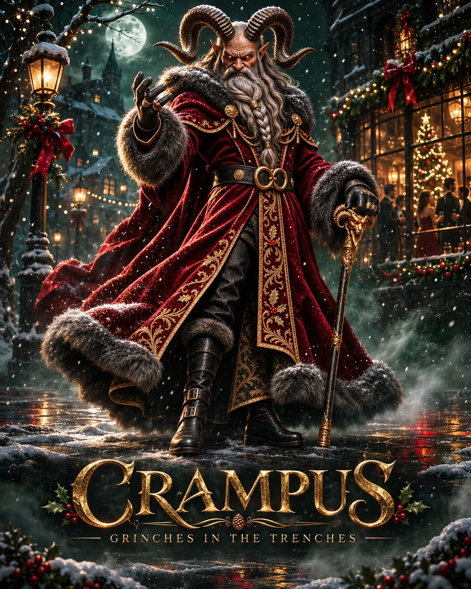

LEAKED INTERNAL MEMO / 001
SANTA'S BEEN
PUT ON A PIP.
Thirty days to improve performance. Reindeer morale is at an all-time low.
STATUS: UNEMPLOYED?
WINTER 2026 // UNAUTHORIZED HOLIDAY TAKEOVER
He's survived centuries of folklore. Now he's got Wi-Fi, bad intentions, and access to the North Pole group chat. Santa's HR department is in shambles.
EST. BEFORE YOUR ANCESTORS STILL NOT ON THE NICE LIST

SANTA WAS UNAVAILABLE FOR COMMENT.

EVIDENCE // DO NOT FEED AFTER MIDNIGHTBefore Christmas had gift cards, tracking numbers, or customer service, winter legends warned of a horned troublemaker.
CRAMPUS caught up with civilization. He's online, he's petty, and he's got opinions about your family group chat, questionable shopping habits, and everybody calling themselves a CEO in December.
“SANTA HAS A NICE LIST. I HAVE RECEIPTS.” — CRAMPUS
Meet a legendary demon with modern problems. Every department at the North Pole is now a little worse.
Thirty days to improve performance. Reindeer morale is at an all-time low.
STATUS: UNEMPLOYED?You already know what you did. Now let the ancient demon put it in writing.
GET EXPOSED ↗Millennia of darkness. Today's most unnecessary opinions. Christmas will never be quiet again.
STEAL A PUNCHLINE ↗We don't cancel Christmas. We make it everybody's problem.
Find out why. One name. One verdict. Zero chance of appeal. Made for screenshots, group chats, and December disrespect.
OFFICIAL NOTICE OF HOLIDAY VIOLATION
CHARGE NO. 1225-000
Submit a name to discover the charge.
SENTENCE: PENDING INVESTIGATION.
CRAMPUS // NORTH POLE INTERNAL AFFAIRS
THE FILE CLERK IS ON HIS 600TH COFFEE BREAK.
His ancient powers include bad one-liners and the ability to ruin any group chat. Press the button. Blame the demon.
The workshop is open. No elves were consulted.
Santa checks his list twice. I check the trenches every five minutes. We are NOT the same. 🎄👹 #CRAMPUS
One villain. Four faces of seasonal chaos. Share the look. Remix the legend. Keep the character consistent.
No application. No secret password. Just the wrong crowd having the right kind of Christmas fun.
Inspired by the horned winter folklore figure, our CRAMPUS is an ancient Christmas demon living in the modern world: petty, hilarious, dressed like a villain, and permanently beefing with Santa.
No. Your name and verdict remain on your own device. Download a card and share it yourself, without making an account.
Reimagined using the 2025 CRAMPUS video as reference: glowing red eyes, curled horns, white beard, winter couture, and luxury villain energy.
No. This is the official entertainment and community hub. There is no wallet connection, token sale, or financial transaction on this website.